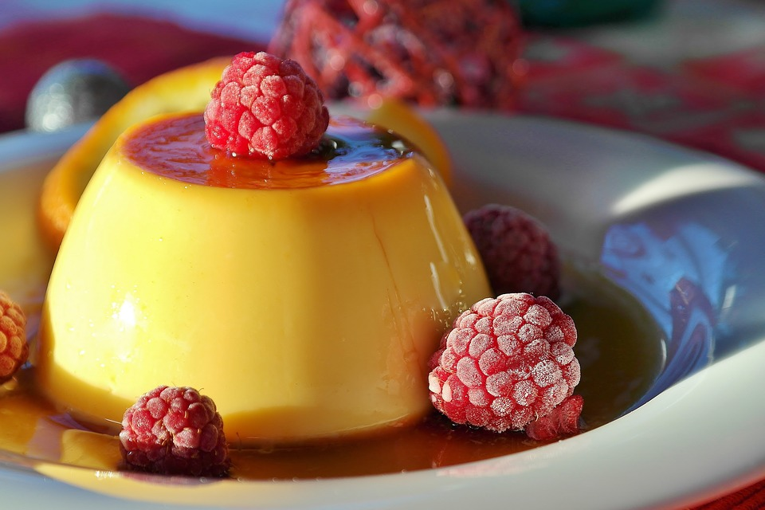
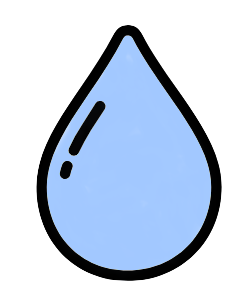
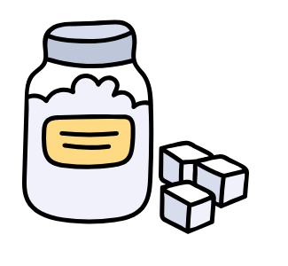
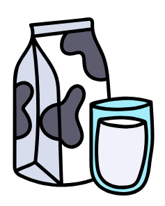
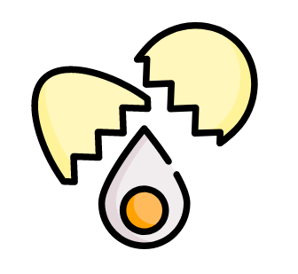
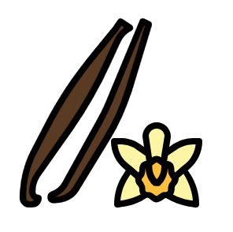

La crème au caramel
Creme caramel is a classic French dessert. Sometimes, it is also called "flan au caramel". You can find it in most French or Spanish restaurants, but today we are going to bake our own.
This is a custard dessert baked with a layer of clear caramel sauce on top. You can serve it either hot or cold. It may look hard to make but it is actually really easy.
So now no excuses : let's bake !
Ingredients (for 6 persons)
For the caramel:
|  | 5cl of water |
|  | 90g of caster sugar |
For the custard:
|  | 50cl of half skimmed milk |
|  | 3 eggs |
| 80g of caster sugar | |
|  | 2 beans of vanilla (splitted and scratched) |
Preparation
Step 1: Preparing the caramel
| In a pot, melt the sugar on slow heat (without adding water) | |
| When the sugar is starting to look like caramel (reddish-brown color), add the water spoon after spoon. | |
| Pour the caramel in little ramekin that can go in the oven. |
Step 2: Preparing the custard
| Preheat the oven at 130°C | |
| Put the milk and the splitted and scratched vanilla in a pot to boil. | |
| In a bowl, whisk the eggs with the sugar. | |
| When the milk is boiling, pour it on the egg mixture while removing the scum. | |
| Fill the ramekins and put them in a big dish (oven-proof) with hot water to half-height. | |
| Bake in the oven for 45 minutes. | |
| Take it off and leave it to cool down in the fridge for an hour. |
Trick : Usually you would beans of vanilla but you can also use one tablespoon of liquid vanilla.